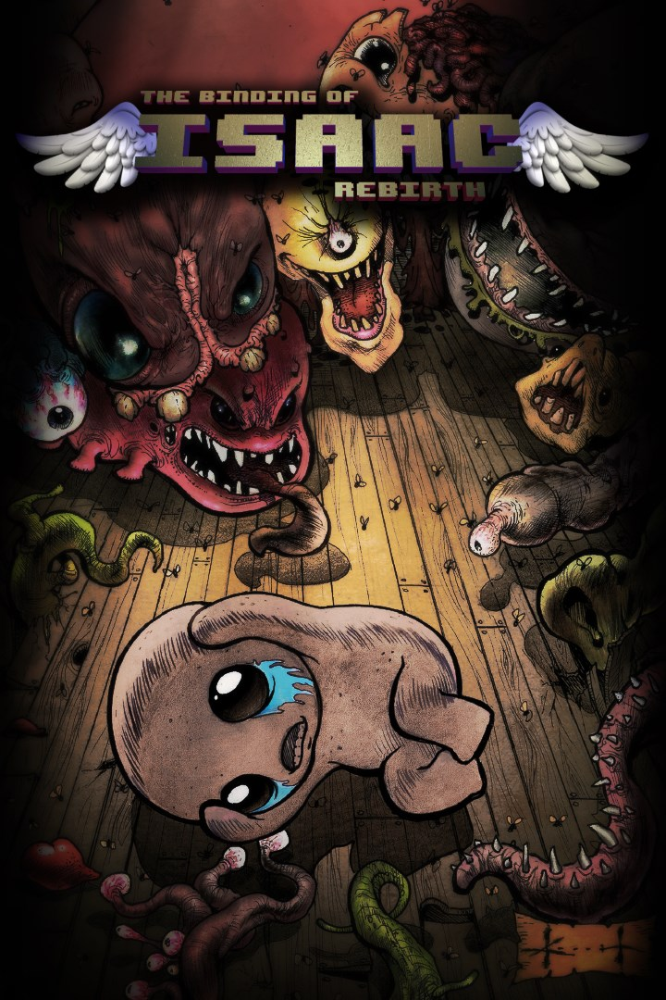
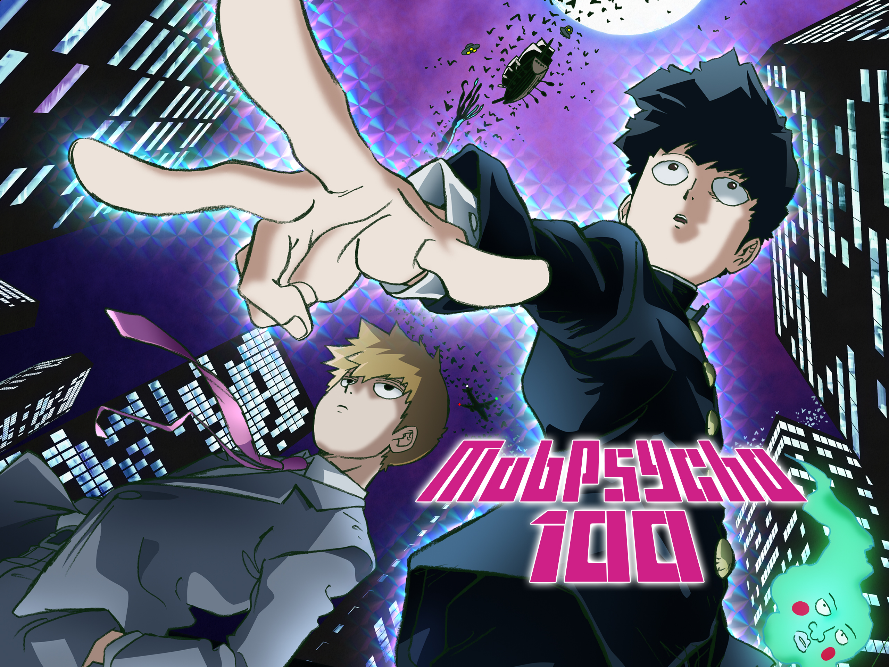
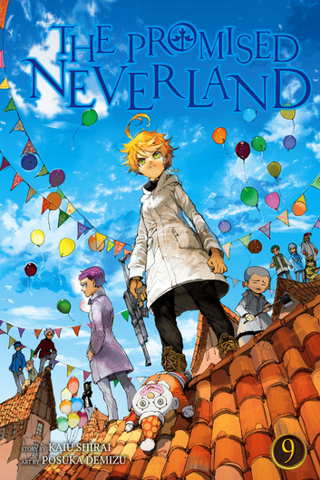

Formación académica
-
2024 – actualidad
Ingeniería en Sistemas Computacionales
Instituto Politecnico Nacional (ESCOM).
-
2020 – 2023
Sistemas Automotrices
Vocacional 3 "Estanislao Ramirez Ruiz".
Hobbies



Acerca de criptografía: la historia de RSA
Hasta los años setenta, para comunicarse en secreto dos personas tenían que ponerse de acuerdo antes en una clave compartida. Eso funcionaba para gobiernos y ejércitos, pero no para millones de personas conectadas por internet. El problema parecía no tener salida.
En 1976, Whitfield Diffie y Martin Hellman propusieron un método revolucionario: el intercambio de claves públicas para derivar una clave secreta común, sin transmitirla directamente. Este trabajo introdujo el concepto de criptografía de clave pública y marcó el inicio de una nueva era en la seguridad informática. Les faltaba una función matemática que lo hiciera posible.
Ron Rivest, Adi Shamir y Leonard Adleman, investigadores del MIT, se inspiraron en la idea de Diffie-Hellman para desarrollar el primer sistema práctico de criptografía de clave pública. El resultado fue RSA, nombrado con las iniciales de sus creadores. Publicaron su descubrimiento en el artículo «A Method for Obtaining Digital Signatures and Public-Key Cryptosystems».
Se apoya en un hecho simple de enunciar y muy difícil de resolver: multiplicar dos números primos enormes es fácil, pero recuperar esos primos a partir del resultado es, con los métodos conocidos, prácticamente imposible.
Hoy RSA protege conexiones HTTPS, firmas digitales y correos cifrados. Por eso tiene sentido que en esta página puedas descargar mi llave pública: con ella cualquiera puede enviarme un mensaje que solo yo puedo leer.
e = 3, d = 7
Mensaje m = 4 → cifrado c = 4³ mod 33 = 31
Descifrado: 31⁷ mod 33 = 4
Aunque RSA sigue siendo un estándar fundamental, su futuro está intrínsecamente ligado al progreso de la computación cuántica. En los próximos años, es probable que veamos una transición gradual hacia algoritmos más robustos, mientras que RSA continuará desempeñando un papel clave como tecnología puente.
CV y llave pública
Descarga mi currículum en PDF o mi llave pública.